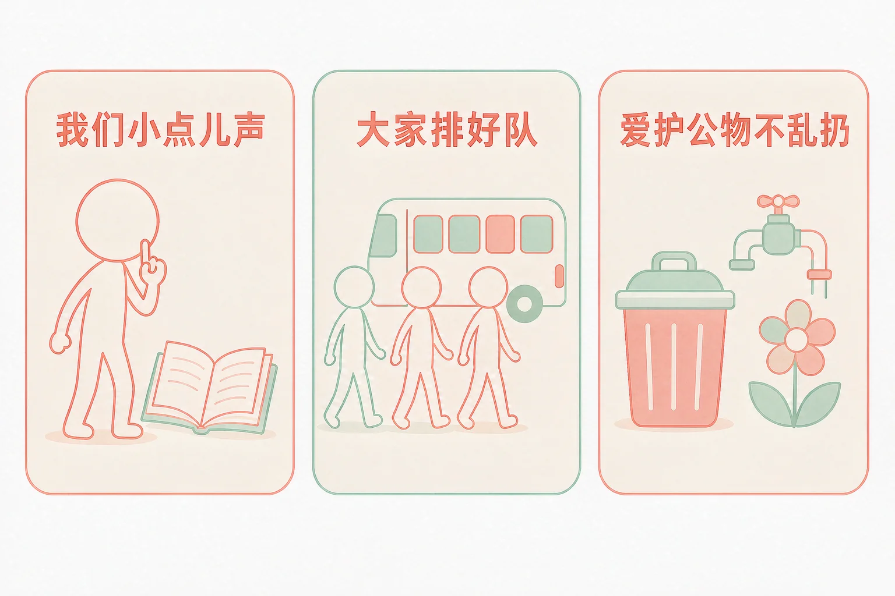
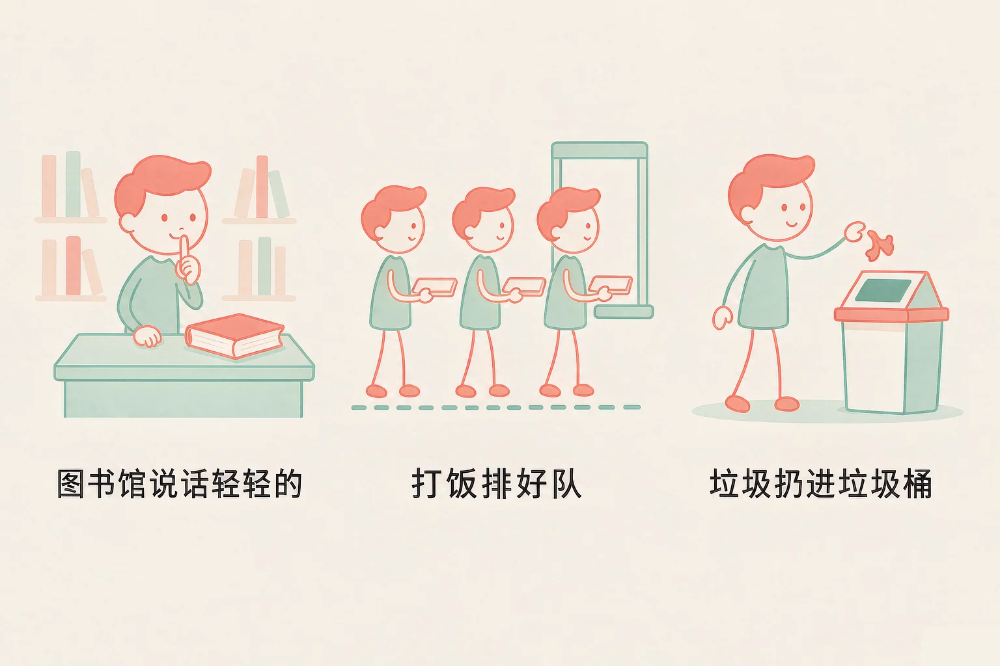
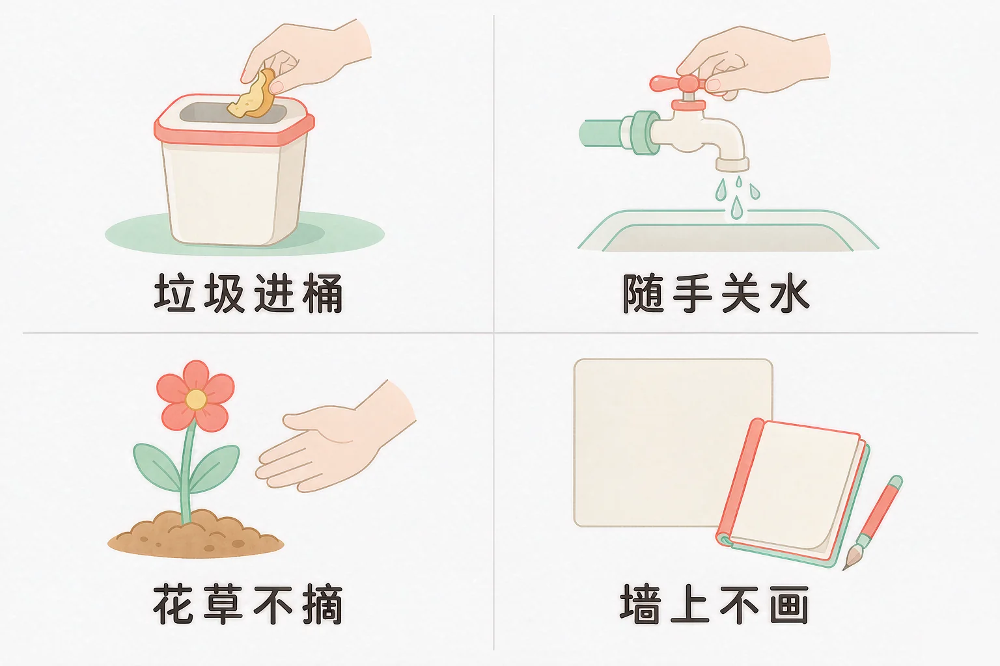

Gallery
v1.0.0 · skill v7.22.0
小学一年级 · 法治启蒙
为什么有的地方要小声说话，为什么大家要排队，升旗的时候又为什么要立正站好？

选一个你真正想知道的问题，后面的活动都会围着它转。
选择或输入后，这节课会围绕你的问题展开。
先凭直觉选一个，选完立刻看到解释——错了也没关系，正好知道要重点听哪里。
1. 在图书馆看书，我想和旁边的同学说一句话，下面哪个做法更合适？
小声说，旁边的同学听到了，看书的人也没被打扰。图书馆是大家安静看书的地方。错因提醒：有人误认为「只说一句没什么关系」——一个人一句，一间阅览室就会吵起来，这是最常见的一个搞混。
2. 食堂打饭，前面排了很长的队，我肚子已经很饿了，应该怎么做？
先来后到，队伍走得快，每个人都能早一点拿到热饭。错因提醒：常见错误是误认为「插一次队没什么大事」——只要有一个人往前挤，后面的人就都想挤，队伍就乱了。
3. 升国旗、奏国歌的时候，下面哪个做法是对的？
五星红旗是我们的国旗，《义勇军进行曲》是我们的国歌。升旗的时候立正站好、跟着唱国歌，就是向自己的国家表达尊重。错因提醒：容易搞混「不说话」和「不乱动」——立正站好，是手和脚都要站定，手里也不能玩东西。
为什么要学这一课？
我们已经知道，在学校要听老师的话、和同学好好相处（And）；可是一高兴就容易忘，在图书馆大声喊、打饭时挤到前面去，旁边的人就皱起了眉头（But）；所以这节课就来学一学，生活里处处都有规则，这些规则到底是什么、为什么要守着它（Therefore）。
规则不是拿来管我们的，它是让每个人都能舒舒服服待在一起的办法。先看两件最常遇到的事。
我们小点儿声
在图书馆、教室、电影院这些地方，说话轻轻的，走路也轻轻的。声音一小，旁边的人才能专心做自己的事。
大家排好队
打饭、上下楼梯、上公交车，一个跟着一个，先来后到。不往前挤，也不插到好朋友前面。

🔍 深层理解 换个角度再看一遍这件事，看看能不能说出背后的原理。
看见它：规则不是一句口号，它就是能看见的动作：把声音放小、站到队尾、一个跟着一个往前走。
解释它：为什么要有这些规则？因为一个地方不只我一个人。声音一大，别人就看不进书；有人往前挤，队伍就走不动。规则让每个人都少吃一点亏。
迁移它：医院、电影院、公交车上，规则也一样。地方换了，做法不变——先想一想，我这样做，旁边的人会怎么样。
先点一件你在公共场所可能遇到的小事，再从三个做法里选一个。选完会告诉你，旁边的人心里会怎么样。
先点一件今天可能遇到的小事。
公共的东西，就是大家一起用的东西：教室的墙壁和桌椅、学校的图书、公园的花草、路边的垃圾桶。它们不是哪一个人的，所以要大家一起爱护。

有的同学误认为「公共的东西坏了不关我的事」。可是墙壁花了、桌子刻坏了、花坛秃了，难受的是每天要用它们的每一个人，包括你自己。还有的同学以为「摘一朵花、扔一张纸都是小事」——每个人都来一次小事，公共的地方就待不住了。
🔍 深层理解 换个角度再看一遍这件事，看看能不能说出背后的原理。
比较它：自己的东西和公共的东西：自己的本子你会收好，公共的课桌也该一样对待。差别只在用它的人有几个。
解释它：为什么不能乱扔？因为垃圾留在大家要走过的地方，会绊倒人、招虫子，还得别人来收。多走几步路，就把麻烦留给了垃圾桶。
迁移它：在小区里、在公园里、在公交车上，这条做法也一样：看到公共的东西被弄坏，能顺手做的就顺手做一点。
先点一条做法，再点它应该进的筐：做出来大家都舒服的放一边，会打扰到别人的放另一边。
先在上面点一条做法。
分完之后，想一想：
「会打扰到别人」那一边里，哪一条最像你自己？你打算从明天开始改哪一条？把它写下来。
情境：星期一早上，学校要举行升旗仪式。我们跟着小美看一遍，请你一步一步想一想，她哪几步做得对，为什么。
为什么要这样做？五星红旗是我们国家的国旗，《义勇军进行曲》是我们国家的国歌。国旗和国歌是一个国家的象征，升旗的时候立正站好、跟着唱，就是在向自己的国家表达尊重。
有的同学误认为「升旗的时候小声说两句、手里玩个东西没什么」。可是升国旗、唱国歌是很庄重的时刻，说话、玩东西就是对国旗和国歌的不尊重。还有的同学要注意区分「站起来了」和「站好了」——立正站好，是两只手放在身体两边、不乱动，不是随便站一站。
说给同桌听：小美这四步里，你已经做到哪几步？哪一步最想学着做？
先凭直觉选一个，选完立刻看到解释——错了也没关系，正好知道要重点听哪里。
1. 下面哪句话说得对？
一间阅览室里只要有几个人各说一句，就再也安静不下来了。规则保护的是每一个在里面的人。错因提醒：常见错误是误认为「一个人一次没关系」——每个人都这样想，规则就没了，这是最容易搞混的一点。
2. 看见教室的地上有一张纸屑，可是不是我扔的，下面哪个做法更好？
教室是大家一起用的地方，顺手捡一张纸只要几秒钟，教室就干净了。错因提醒：有人误认为「不是我弄的我就不用管」——公共的地方靠的是每个人都顺手做一点。
3. 升国旗、奏国歌的时候，下面哪个做法是对的？
立正站好、跟着唱国歌，是在向国旗和国歌表达尊重。五星红旗是我们的国旗，《义勇军进行曲》是我们的国歌。错因提醒：容易搞混「人站起来了」和「站好了」——手和脚都要站定，手里也不能玩东西。
先点一个地方，再从下面的八张规则卡里挑一条最合适的放上去。八张卡里有四张要小心，它们放到哪儿都不合适。
先在上面点一个地方，再挑一张规则卡。
四个地方都配好以后，想一想：
这四条规则里，哪一条我们班最需要？请你给班里设计一句文明提示语，明天贴到相应的地方去。
先凭直觉选一个，选完立刻看到解释——错了也没关系，正好知道要重点听哪里。
1. 在电影院里，电影还没开始，我想和同学说说昨天的事，你会：
电影院里声音一小，别人才能看清字幕、听清声音；散场以后再聊，想聊多久都可以。错因提醒：别把「电影还没开始」当成可以大声说的理由——旁边的人已经在看了。
2. 在公交车上，一位老奶奶上车了，车上没有空座位，你会：
把座位让给更需要的人，也是公共场所里的一条规则。自己抓好扶手，下一次仍然可以坐。错因提醒：容易搞混「我先来的」和「我该让给谁」——先来后到说的是排队，让座是照顾更需要的人，两件事不冲突。
3. 公园的长椅上有别人丢下的空瓶子，你会：
公园是大家一起用的地方，顺手捡起来扔进垃圾桶，下一位来的人就能舒舒服服坐下。错因提醒：有人误认为「不是我喝的就不用管」——公共的地方，靠的就是每个人都顺手做一点。
还要记牢一句话：规则看起来是管着我们的，其实是让每个人都能舒舒服服地待在一起。今天就先挑一条试试——比如课间说话轻一点，或者看到地上有纸屑顺手捡起来。
给别人讲一遍：请用「小声、排队、不乱扔」这三个词，说清楚你今天打算做到的一件事。
再动一动手：写一写你下一次升国旗打算怎么做，把三件事写在纸上，贴在自己的书桌前。
三层练习，做完第一、二层就算通关；第三层留给愿意继续探索的同学。
⭐ 基础巩固（必做）
⭐⭐ 能力应用（必做）
⭐⭐⭐ 迁移挑战（选做）
左边是学它之前要先会的，右边是学会之后可以继续探索的，下面是同一领域的伙伴知识。
图谱正在加载：首次进入需下载知识索引（约 1–3 秒），加载完成后本行会自动消失。